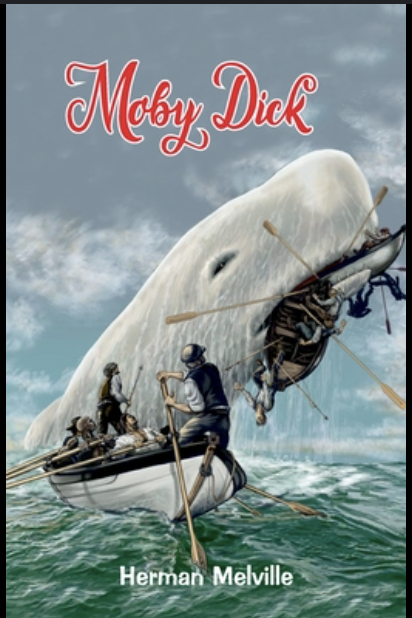

I am currently on a great trip. The first part of my trip I went to Oktoberfest in Munich to celebrate a close friends engagement. Now I am in Croatia soaking up the sun!
A favorite restaurant in Utah, I originally discovered it from a recommendation via my buddies dad. It was featured on Guy Fieri's Diners, Drive-ins and Dives. They serve Mexican food. My favorite dish is Tacos Don Ramon!
My favorite dish to make is Steak, I commonly use a sou vede to get the exact temperature of the steak perfectly. I then sear the steak using a very hot cast iron skillet. I prefer to get good cuts of meat and just use salt and pepper. In the industry they would say; let the meat do the talking!
| Book Name | Cover | Author | Summary |
|---|---|---|---|
| Moby Dick |  |
Herman Melville | Moby Dick is the story of a captain and his obsession with a whale where he jeopradizes the lives of his crew |
| Lone Survivor | Marcus Luttrell | In Lone survivor a navy seal on a mission escapes after being surrounded by talliban troops | |
| Cat in the Hat | Dr. Seus | Cat in the hat is a rhyming book aimed at teaching kids to read. It features kids stuck at home on a rainy day | |
| Little Women | Louisa Alcott | Litte women is a book about coming of age for 4 women during the civil war |